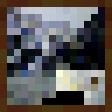

About

Gallery
Trivia


About
Gallery
Trivia
About
Gallery
Trivia
| Species | Enderman |
| Colour | black |
| Health | 40♥ × 20 |
| Behavior | Neutral |
| Attack strength: | Easy: 4.5♥ × 2.25; |
| Normal: 7♥♥♥♥ | |
| Hard: 10.5♥ × 5.25 |
An enderman is a neutral mob found in all three dimensions. Endermen can teleport and pick up blocks.
Endermen can spawn on any solid surface that has at least three empty spaces above, at the light level of 0 in the Overworld and the End, or a light level of 11 or less in the Nether. They are the only mob that spawns in all 3 dimensions.
An enderman can be provoked by a player or other mob attacking them. They can also be provoked by a player looking them in the eyes from up to 64 blocks then looking away. Endermen open their mouths and begin to shake angrily if provoked; they also make loud and lengthy sounds while being stared at.
Hostile Enderman
An enderman can be provoked by a player or other mob attacking them. They can also be provoked by a player looking them in the eyes from up to 64 blocks then looking away. Endermen open their mouths and begin to shake angrily if provoked; they also make loud and lengthy sounds while being stared at. If the player continues to maintain eye contact, the enderman does not move, although it may teleport away. Once the player stops looking at the enderman, it runs toward the back of the player to attack, although it ceases if hit by another player or mob.[2] An aggravated enderman runs fast and often teleports to the location of a player or mob up to 32 blocks away (orthogonally). Endermen are not provoked by a player viewing it through a transparent block or while wearing a carved pumpkin.
An aggravated enderman pursues the player until it is either killed or distracted by external elements, such as rain or fire. They do not take damage from sunlight like undead mobs, but teleport randomly around until finding a dark spot if not already pursuing a player. During rain or daybreak, they teleport away to underground locations, such as caves.
Ranged attacks are ineffective against endermen, as they teleport when hit by a projectile instead of taking damage. Arrows and tridents appear to bounce off an enderman who is unable to teleport.
Enderman teleporting
Endermen do not teleport in the daytime if on soul sand unless they are damaged. They play a sound exclusively at the teleportation destination.[3] Each teleportation attempt chooses a random destination 32 blocks along each axis cube centered on the current position). It then seeks downward from the chosen destination until the block below is made of a movement-blocking material.
Endermen always attempt to teleport upon taking damage. Most melee attacks are successful, but the enderman usually teleports a few blocks behind the player when hit, if there is space behind the player. Endermen can be attacked with projectiles if they are in a boat or minecart. An enderman cannot teleport while it is in a minecart or boat, although in rain and water it attempts to do so, always teleporting back repeatedly until death.
Enderman carrying a block
Unlike any other mobs, which cannot hold blocks except as items, endermen have a unique ability to pick up, carry and set down certain blocks. They silently pick up blocks in a 4×3×4 (xyz) region horizontally centered on the enderman and vertically encompassing it. An enderman cannot pick up blocks in a completely flat area. Endermen drop the block they are holding upon death as an item, although they do not visually let go of the block when dying. It does not despawn while holding a block. Endermen cannot place blocks onto bedrock or entities.


idle1.ogg
idle2.ogg
idle3.ogg
death.ogg
hurt1.ogg
×
hurt2.ogg
stare.ogg
scream1.ogg
scream2.ogg
Teleport1.ogg
×
Sometime on or before July, 26 2011, Notch posts an image on his Google+ account showing planned "creepy mobs." Two can be seen holding a grass block and a sand block with their arms far outstrached

Original Enderman screenshots
July 28, 2011 Notch described that endermen would be peaceful, unless you looked straight at them, then they would rush in to attack whenever you broke the gaze.
Green eyed Enderman
July 29, 2011 At first, when Notch was still designing the endermen, he thought they were not "creepy" enough, coming with the idea that having a situation that the player would want to avoid could make the enderman significantly more scary. This gave Notch the idea to implement the staring feature, where aiming the crosshair at the enderman's face would cause a suspenseful moment in which breaking eye contact would trigger an attack, as well as the enderman having the ability to teleport so that when the player has stared at the enderman, they would have to face a consequence for that action.
In the Beta 1.8 demo at PAX, endermen dropped diamonds as a placeholder for ender pearls.

Diamond
∘ Notch claimed in public that the enderman is a "subtle reference" to the Slenderman, a similar-looking monster with a similar name. Given the later development of the End, it is possible he already had the name in mind, and did not choose it because of the Reddit thread in which their name was revealed.
Reddit reveal screenshots
Reveal trailer
∘ The enderman has been officially introduced. Endermen are able to pick up any full block, including bedrock and spawners. The angle of their arms have also been lowered when holding a block. Endermen have green eyes and emit black smoke. They also have zombie sounds as a placeholder.
Beta Minecraft Endermen
∘ The enderman eye color has been changed from green to purple. Endermen now emit portal particles, rather than smoke. Endermen no longer pick up unobtainable blocks including bedrock, double slabs, and spawners and also no longer pick up blocks with inventories including chests, dispensers, and furnaces but can still pick up any other full block.
Enderman floating in water
∘ Before this update, endermen could be killed with the use of a bow. Now, arrows, snowballs, eggs and other ranged attacks do not hit them due to the fact that they teleport away before impact. Enderman now teleport away and become neutral if they are in water.
Endermen in sunlight
∘ Endermen used to burn in sunlight, but as of this update, they instead randomly teleport around until they find a dark spot or despawn eventually. This makes it extremely hard to get close enough to kill them during daytime.

Inverted vision
∘ Switching to spectator mode and taking an enderman's point of view adds a shader that inverts colors, suggesting that they see the End as an island of blue cobblestone (as end stone is a yellowish version of cobblestone with inverted colors) in a white sky, with white pillars, white endermen with green eyes and a white ender dragon, also with green eyes. They also see cobblestone as end stone.
Endervision
Invisible Enderman
∘ The texture for an enderman's eyes is located in a different texture file than the body, allowing their eyes to glow. Because the two textures do not line up perfectly, forcing an enderman to look straight up causes its eyes to turn blank white. This also causes the enderman's eyes to be visible even when under the Invisibility effect.

Chorus fruit
∘ The enderman teleportation sound also plays when a player teleports using an ender pearl[Bedrock Edition only] or chorus fruit.
∘ The developers have stated that the belief that enderman sounds are backward distortions is just speculation.
A group of Endermen
∘ Dinnerbone suggested "a haunting of endermen" as the collective noun for Endermen.
Additionally, in the third episode of Minecraft: Story Mode, The Last Place You Look,
a player is given the option to correct the grammar of other characters by specifying that the
collective noun for a group of endermen is "a haunting of Endermen".
In the fourth Minecraft novel Minecraft: The End, the collective term used by endermen
themselves is
"an End of Endermen".
Enderman in SSBU
∘ The enderman is a playable DLC character in the crossover fighting game Super
Smash
Bros. Ultimate
as an
alternate costume for Steve, though with altered proportions to be at Steve's height.
Additionally,
there is
an enderman "spirit" that makes the user vulnerable to damage by water, as are regular
endermen.

Enderman Spirit